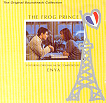

Celtic Lyrics Corner > Artists & Groups > Enya > The Frog Prince
|  |
The Frog Prince
(1985) |
| Tracks : |
1. The Train To Paris
2. The First Day 3. Jazz Club - Mack The Knife 4. Jazz Club - Let It Be Me 5. With Jean-Phillipe 6. Jenny 7. Reflections 8. The Frog Prince 9. Dreams 10. The Kiss 11. Jazz Club - Sweet Georgia Brown 12. Jazz Club - Georgia On My Mind 13. A Kiss By The Fountain 14. Jenny & Roz 15. Les Flon-Flons Du Bal 16. Epilogue |